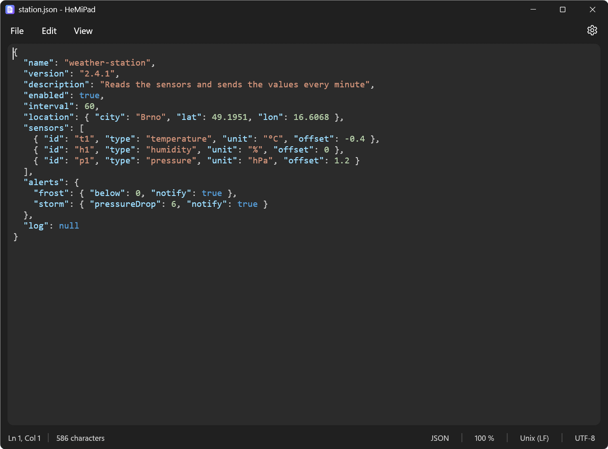

HeMiPadBeta
Everything of the classic Notepad – in the look of Windows 11, with dark mode, colours for JSON and YAML, line numbers and spell check. Small, fast, and without any internet features.
Windows 10 / 11, x64 and ARM64. One small program, nothing else to install. Also in HeMi Launcher.

What it does
Notepad, complete
New, open, save, print, find and replace, go to line, time and date, word wrap, zoom, .LOG files – with the same shortcuts.
For config files
Colours for JSON, YAML and similar files, line numbers, indentation kept on Enter, Tab and Shift+Tab on several lines.
Spell check
With the dictionaries of Windows – the languages installed in Windows, suggestions on right click, nothing to download.
Encodings
UTF-8 with or without BOM, UTF-16, ANSI and OEM; CRLF, LF and CR line endings – shown and changed in the status bar.
Private
No internet features at all – nothing is sent anywhere.
Light
Starts at once and uses little memory; the spell checker is let go when you stop typing.
Downloads
| HeMiPad-Setup.exe | The installer: just for you or for all users, with a Start menu entry and an uninstaller. |
| HeMiPad-Portable.zip | Just the program – run it from any folder (-arm64 for Windows on ARM). |
| HeMi Launcher | Or get it with HeMi Launcher – it installs and updates all HeMi apps. |
| Problems, ideas | GitHub Issues |